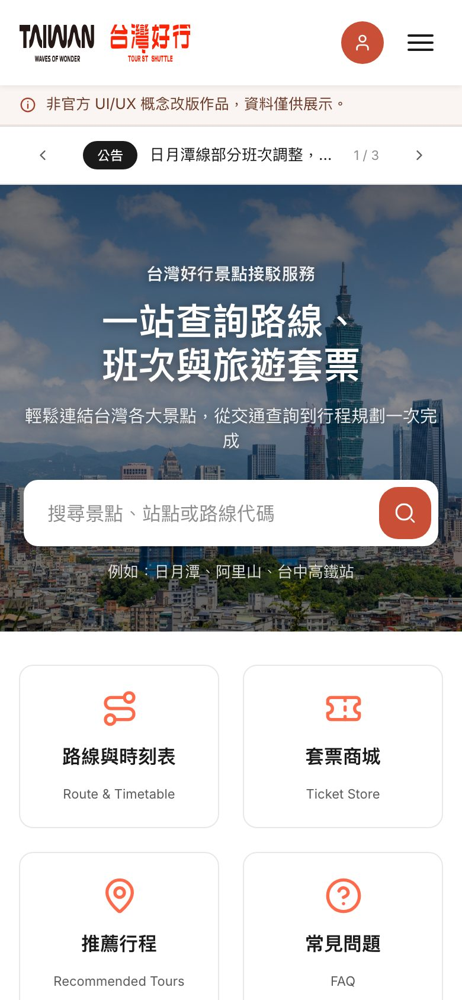
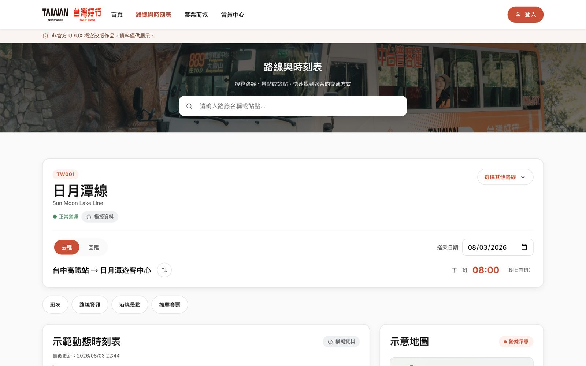
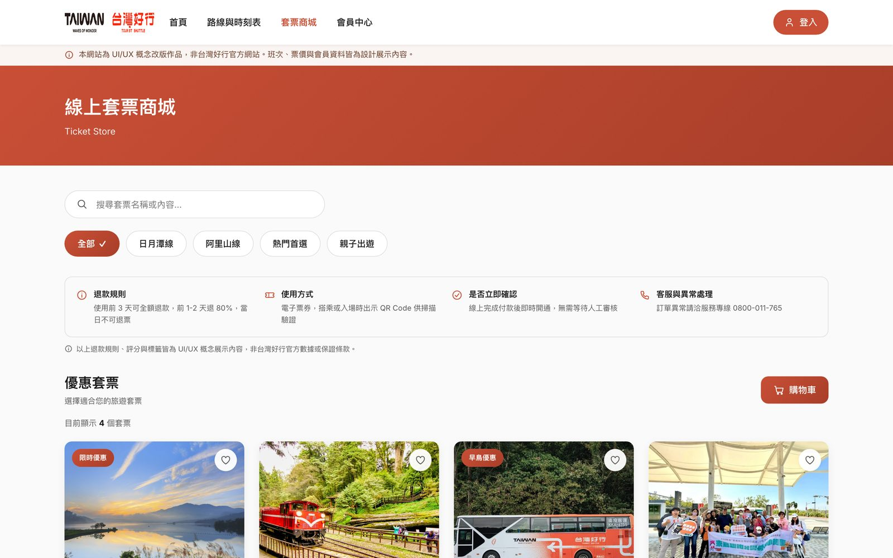
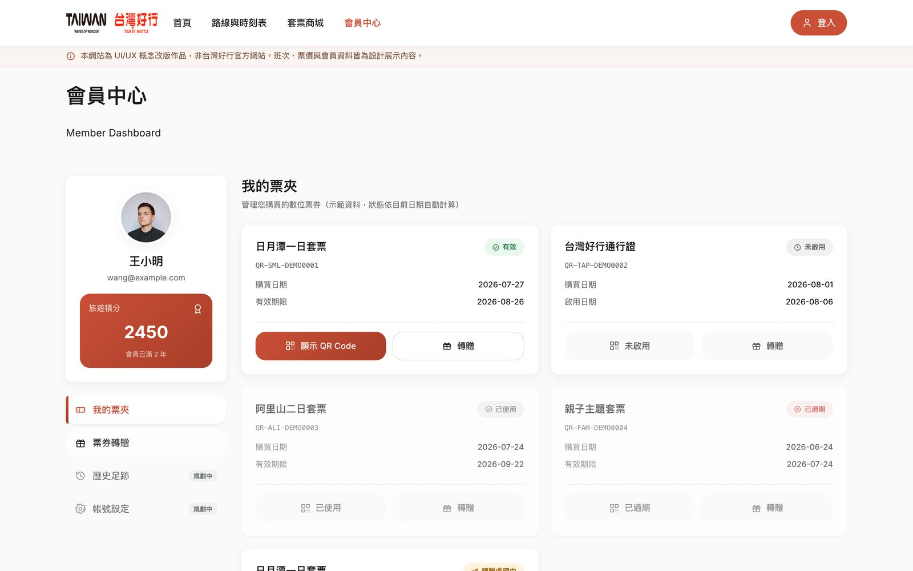

台灣好行 RWD
台灣好行 Taiwan Tourist Shuttle 的非官方 UI/UX 概念改版，重新設計旅客從查詢路線、確認班次、購買套票到查看電子票券的完整流程，並同時考慮手機操作、無障礙與資料可信度。
從查路線到刷票上車，讓同一套設計語言走完整趟旅程。

- Role
- UI/UX 設計＋前端開發（個人專案）
- Timeline
- 2025–2026
- Problem
- 路線、班次、購票與會員資訊分散在不同頁面，首頁也缺乏明確的任務入口。
- Method
- 對現有網站進行可用性走查，並用 ChatGPT 模擬不同旅客情境，比對走查結果與模擬情境的落差。
- Key Deliverables
- 完整前端實作的互動網站：首頁搜尋、路線與時刻表、套票商城、會員電子票夾，並涵蓋 390px 手機版與無障礙優化。
- Validation
- 自我檢核（console 錯誤、手機版顯示、搜尋與購物車流程），非正式跨裝置測試。
- Limitation
- 沒有正式跨裝置測試資源；班次、票價、評分與會員資料皆為模擬展示內容，非官方真實數據。
專案總覽
台灣好行 RWD 是一個以「台灣好行 Taiwan Tourist Shuttle」為主題的非官方 UI/UX 概念改版，目標是重新設計旅客從查詢路線、確認班次、購買套票到查看電子票券的完整流程。這個作品不只是視覺改版，而是展現資訊架構、互動流程、RWD、無障礙與前端實作的整合能力；頁面中也清楚標示為非官方概念作品，班次、票價、評分與會員資料皆為模擬資料。
旅客的完整任務流程：
快速開始
首頁提供搜尋、熱門路線與服務快速入口，降低使用者進站後的判斷成本。
資訊確認
路線頁集中呈現下一班、營運時間、發車頻率、票價與沿線景點。
購票決策
套票頁補上退款規則、使用方式、是否立即確認與客服異常處理，讓使用者有足夠資訊做決定。
票券管理
會員中心呈現票券狀態與 QR Code 情境，補完整體服務閉環。
問題
台灣好行是提供旅客串連景點的公共交通服務。旅客通常不是只想查一條路線，而是想完成一整段旅程規劃：先找到目的地，再確認班次與停靠站，接著判斷是否需要購買套票，最後管理電子票券——但原始網站把這幾件事拆成互不相關的頁面，旅客得自己在中間來回切換、拼湊出完整的行程。
資訊分散
路線、班次、購票與會員資訊分散在不同頁面，旅客需要自行切換查找，難以完成一次完整的行程規劃。
首頁缺乏任務入口
首頁缺少明確的任務入口，旅客不容易快速開始查詢路線或購票。
購票信任資訊不足
套票購買前缺少退款規則、使用方式等信任資訊，旅客難以放心下決定。
研究
以現有台灣好行官網與專案自身早期畫面為對象進行可用性走查，並用 ChatGPT 模擬不同旅客情境（首次到訪的自由行旅客、行前規劃並登入會員的回頭客、上車前臨時查詢即時路線的旅客），比對走查結果與情境模擬之間的落差，找出真正卡住旅客的環節。
視覺語彙不同步
購票商城與會員中心是後期加入的功能，沿用了較舊的紅色系介面，與首頁、路線頁的新版橙色系品牌不一致，容易讓人誤以為離開了官方網站。
購票與行程規劃斷裂
旅客在路線頁面查到想去的景點後，得離開頁面重新到套票商城搜尋對應行程，兩邊的路線與景點名稱也沒有互相連結。
高齡與低頻使用者的操作門檻
公共服務網站的使用族群橫跨不同年齡層與熟悉度，付款與會員頁面的表單欄位、按鈕間距若不夠寬鬆，容易造成誤觸或放棄購票。
設計策略
根據走查結果整理出三個設計原則，作為視覺統一、跨裝置版面與購票流程決策的依據。
全站統一設計系統，不分先後期功能
重新梳理色彩、按鈕與卡片樣式，讓首頁、路線查詢、購票商城與會員中心共用同一套橙色品牌語彙，不再有新舊介面並存的落差。
路線與購票雙向串接
路線頁面直接帶出對應套票與推薦行程，購票商城也能依路線篩選，減少旅客在頁面之間來回搜尋。
對比與觸控目標優先於精緻裝飾
字級對比與按鈕尺寸符合無障礙標準，付款與表單欄位加大觸控熱區，優先服務最多元的使用族群。
關鍵決策
| 首頁快速任務入口 | 首屏加入景點搜尋框、公告輪播與四個服務快速入口（路線與時刻表、套票商城、推薦行程、常見問題），降低旅客進站後的判斷成本。 |
|---|---|
| 路線頁資訊整合 | 路線頁集中呈現下一班時刻、營運狀態、示範動態時刻表與路線示意圖，並用頁籤切換班次、路線資訊、沿線景點與推薦套票，取代原本分散在多頁面查找的方式。 |
| 套票商城信任資訊 | 套票頁加入退款規則、使用方式、是否立即確認與客服異常處理，並清楚標示評分與資料皆為概念展示內容，讓旅客購買前有足夠資訊做決定。 |
| 會員電子票夾 | 會員中心以有效、未啟用、已使用、已過期四種狀態呈現票券，狀態依目前日期自動計算，並支援 QR Code 出示與票券轉贈。 |
| 全站無障礙與手機版優化 | 加入 skip link、語意化標題、焦點樣式與 ARIA 狀態，並針對 390px 手機版調整導覽、搜尋、卡片與選單 CTA，確保跨裝置操作一致。 |
跨裝置呈現
同一套設計系統延伸至桌機與手機，390px 手機版重新調整導覽、搜尋、卡片與選單 CTA，確保兩種裝置呈現一致的操作邏輯。

關鍵畫面
從路線頁的班次與景點資訊、套票商城的購買信任資訊，到會員中心的電子票夾狀態，皆沿用同一套橙色品牌語彙。



驗證
沒有正式的跨裝置測試資源，驗證方式聚焦於自我檢核：檢查 console error、favicon、手機版顯示、搜尋流程與購物車金額計算是否正確，並確認全站標示模擬資料與非官方聲明清楚可見，避免使用者誤認為官方服務。
反思
這個作品展示的不只是視覺設計，而是完整的旅遊交通服務流程設計——把路線查詢、班次確認、套票購買與會員電子票券串成一個完整體驗，同時兼顧手機操作、無障礙與資料可信度。這個專案也讓我更清楚，一個服務型網站的體驗設計，關鍵在於任務的連續性，而不是單一頁面的視覺呈現。